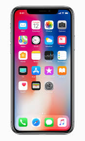

역사
최초의 스마트폰은 IBM 사이먼으로 추정된다. IBM사가 1992년에 설계하여 그 해에 미국 네바다 주의 라스베이거스에서 열린 컴댁스에서 컨셉 제품으로 전시되었다.
안드로이드
안드로이드(영어: Android)는 휴대 전화를 비롯한 휴대용 장치를 위한 운영 체제와 미들웨어, 사용자 인터페이스 그리고 표준 응용 프로그램(웹 브라우저, 이메일 클라이언트, 단문 메시지 서비스(SMS), 멀티미디어 메시지 서비스(MMS)등)을 포함하고 있는 소프트웨어 스택이자 모바일 운영 체제이다.
아이폰
아이폰(영어: iPhone)은 미국의 애플사의 휴대전화 브랜드 및 시리즈이다. 2007년 1월 9일에 스티브 잡스가 처음으로 발표를 하였다.
샘플
|  |  |
 |